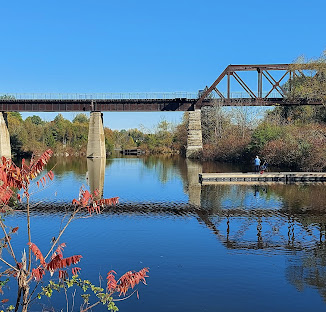
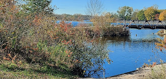
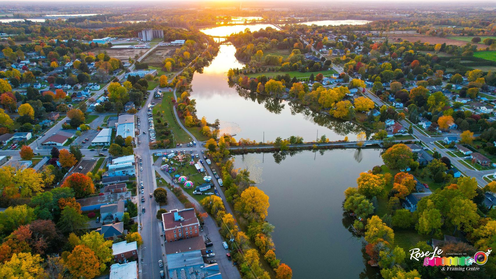

Let's Clean Up Our Community!
Our community is surrounded by beautiful trails, rivers, and waterways that bring people together and provide a place to enjoy nature. Keeping these spaces clean and healthy is something we can all take part in. Join us as we work together to remove litter, protect local wildlife, and preserve the natural areas we enjoy for years to come. Every piece of trash we pick up makes a difference in keeping our trails and water clean, safe, and welcoming for everyone.
Our Goal
Our goal is to bring members of our community together to care for the trails and waterways that surround us. By organizing regular cleanups, we hope to reduce litter, protect local wildlife, and keep these natural spaces enjoyable for everyone. We want to encourage people to take pride in their community and show that even small actions can make a lasting difference.
Event Details
Date: June 15
Time: 10:00 AM
Location: Community Park
Why Get Involved?
Protect Nature

Removing litter helps protect plants, animals, and the natural environment around our trails and waterways.
Keep our Water Clean

Trash can make its way into local waterways. Cleaning up litter helps keep our water healthier for wildlife and the community.
Enjoy Better Trails

Clean trails are safer, more welcoming, and more enjoyable for everyone who uses them.
Build a Stronger Community
Working together gives neighbours a chance to connect while making a positive difference in the place we call home.